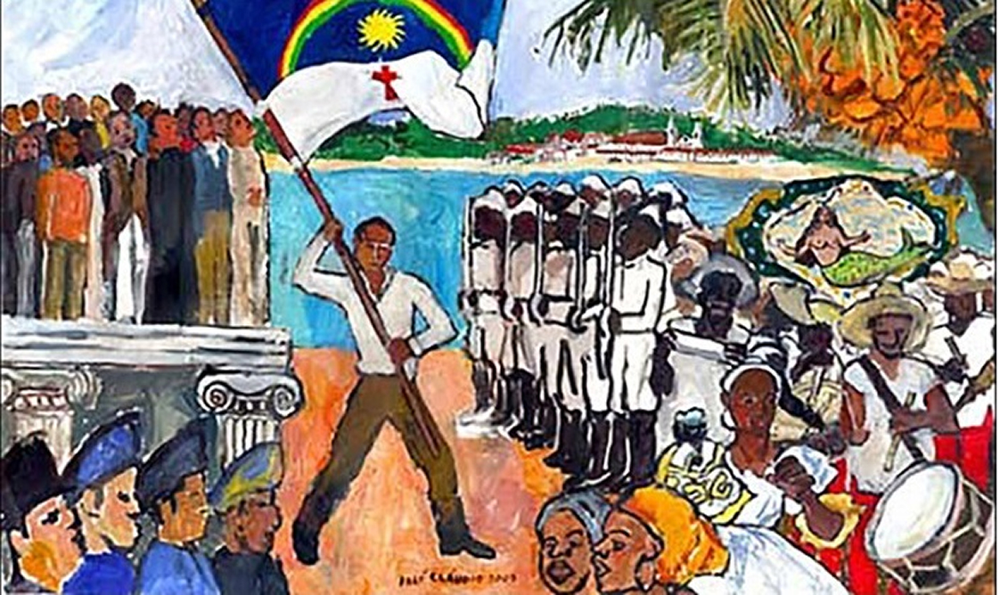

A obra retrata a partida da Corte Portuguesa de Lisboa rumo ao Rio
de Janeiro, no final de 1807, visando o estabelecimento da sede do
Império Português no Brasil, fato que é uma das maiores explicações
e precedentes para o processo de independência que se seguiu, pela
mudança total da ordem política do Império que isso causou. O quadro
foi produzido por um artista francês contratado pela Coroa
Portuguesa, em Lisboa, mostrando as pessoas que compunham a corte e
seus navios para a viagem.
Introdução e Visão Geral
A independência como processo, não como evento.
A Independência do Brasil, tradicionalmente celebrada como um ato
heroico e pontual ocorrido em 7 de setembro de 1822, é na realidade
um processo longo, complexo e cheio de nuances. Longe de ter sido um
rompimento abrupto com Portugal, ela foi marcada por uma série de
disputas políticas, econômicas e simbólicas que se desdobraram ao
longo de vários anos. A imagem consagrada de D. Pedro I, montado em
um cavalo às margens do riacho do Ipiranga, gritando “Independência
ou morte!”, apesar de poderosa do ponto de vista simbólico, é apenas
uma representação construída posteriormente e que serve a uma
narrativa oficial.
Entender a Independência como processo, e não como evento isolado,
permite uma leitura mais ampla e crítica das forças sociais em jogo
na época, revelando como diferentes grupos sociais – desde elites
agrárias até populações marginalizadas – participaram, resistiram ou
foram excluídos desse momento decisivo. Nesta apresentação, será
possível acompanhar os principais marcos que antecederam a ruptura
formal com Portugal, as revoltas e ideias que prepararam o terreno
para esse movimento, os conflitos entre os diversos projetos de país
em disputa, e como a memória sobre esse acontecimento foi sendo
moldada ao longo do tempo.
Contexto Histórico ( 1808 – 1821 )
A independência do Brasil não surgiu de um vácuo, mas se construiu a
partir de profundas transformações iniciadas com a vinda da família
real portuguesa ao Rio de Janeiro, em novembro de 1808. Ao transferir
a corte para o Brasil, D. João VI abriu os portos às “nações amigas”,
estimulou o crescimento manufatureiro local e fez do Rio de Janeiro a
nova sede do Império, conferindo ao território brasileiro autonomia
administrativa inédita .
Em 1815, em uma manobra formal que refletia esse novo peso político e
econômico, o Brasil foi elevado à categoria de reino, unindo-se a
Portugal e aos Algarves sob o título de Reino Unido de Portugal,
Brasil e Algarves. Na prática, porém, essa elevação pouco alterou as
estruturas coloniais: manteve-se o controle lusitano sobre as
principais decisões, e grande parte da população brasileira continuou
sem acesso às esferas de poder.
A crise do sistema colonial agravou‑se no início da década seguinte,
quando as Cortes de Lisboa, após a Revolução Liberal do Porto (1820),
exigiram o retorno imediato de D. João VI e a submissão das províncias
brasileiras às mesmas regras aplicadas em Portugal. Atendendo à
pressão dos deputados portugueses, D. João regressou a Lisboa em 25 de
abril de 1821, acompanhado por mais de quatro mil súditos, deixando
seu filho D. Pedro como príncipe regente no Brasil.
Esse conjunto de eventos – deslocamento da corte, abertura dos portos,
elevação a reino e retorno do monarca – gerou no Brasil expectativas
de maior autogoverno e crescentes resistências às tentativas de
recolonização. Foi nesse ambiente de tensões e projetos contraditórios
que se formaram as bases do processo de independência, cada vez mais
entendido não como um rompimento súbito, mas como resultado de
disputas prolongadas entre metrópole e colônia.
A pintura se refere ao contexto das diversas guerras de Independência
que decorreram nas províncias do Brasil: especificamente, da
Independência na Bahia, mostrando que as Independências variaram em
cada região do Império, e que, sobretudo, ocorreram de forma violenta
e com o uso de armas, como visto na imagem. A obra foi produzida mais
de 100 anos depois do acontecimento que retrata: os movimentos
iniciais pela Independência da Bahia na Vila de Cachoeira, encomendada
pelo Governo da Bahia.
Revoltas e Conjurações Precedentes.
Desde o final do século XVIII, diversas manifestações de insatisfação
com o domínio português foram deflagradas em várias províncias. A
Conjuração Mineira de 1789 e a Conjuração Baiana de 1798 são os
exemplos mais emblemáticos desse período: a primeira, inspirada pelos
ideais iluministas, buscava autonomia política e fim do pacto
colonial; a segunda, de caráter mais popular, ainda reivindicava a
abolição da escravatura e a proclamação de uma república no território
baiano .
Em 1817, a Revolução Pernambucana elevou o tom da contestação ao
propor formalmente a criação de uma república brasileira, com menores
impostos e o fim dos privilégios concedidos a cidadãos portugueses na
administração pública e no Exército . Esses movimentos, apesar de
esmagados pelas tropas do Império, revelaram a força de grupos
provinciais em defesa de um projeto nacional próprio e anteciparam
conflitos que voltariam a ocorrer durante a emancipação.
A luta pela independência não foi isenta de violência: episódios como
o massacre do Brigue Palhaço, no Grão‑Pará, durante o qual 256
manifestantes foram asfixiados após a adesão da província ao novo
regime, demonstram que o processo se deu sob forte coação estatal e
muitas vezes afastou as camadas populares, reforçando seu caráter
elitista.
Surgimento da Ideia de Independência.
A fagulha inicial para a separação definitiva do Brasil de Portugal
acendeu‑se logo após a Revolução Liberal do Porto, em 1820. A
insurreição portuguesa, liderada pelas classes abastadas que exigiam
o regresso de D. João VI a Lisboa e a convocação de Cortes
legislativas, reverberou imediatamente no Brasil. Ao tomar
conhecimento das demandas lusitanas — que, na prática, significavam
a recolonização e a redução drástica das autonomias locais — as
elites brasileiras sentiram‑se traídas pelas promessas de elevação a
reino e autonomia concedidas em 1815.
Nesse contexto, emergiram os primeiros discursos abertamente
favoráveis à independência. Líderes provinciais, intelectuais
influenciados pelos ideais iluministas e comerciantes prejudicados
pelas novas deliberações das Cortes passaram a articular-se em
reuniões e cartas, propondo a emancipação política como solução para
garantir seus privilégios e promover o desenvolvimento econômico
interno . Ainda que, naquele momento, não houvesse consenso sobre o
regime político futuro — monarquia constitucional ou república —,
foi nesse instante que o Brasil deixou de apenas reagir a eventos em
Lisboa e começou a pensar seu próprio destino, pavimentando o
caminho para as etapas seguintes do processo emancipatório.

O quadro pintado por José Cláudio da Silva, representa o movimento
republicano e separatista que ocorreu em Pernambuco em 1817. A
revolta foi fundamental para a independência do Brasil já que deu
início a esse pensamento nas capitanias que foram adotando a
revolução e se tornando províncias independentes.
Projetos de Nação e Conflitos de Objetivos
Ao longo do processo, os defensores da emancipação não partilhavam um
único projeto para o Brasil pós‑independência. De um lado, as grandes
elites agrárias e mercantis — dona das plantações de açúcar, algodão
e, posteriormente, café — viam na separação de Portugal a oportunidade
de livrar‑se das restrições comerciais impostas à colônia, mas sem
renunciar à estrutura social hierárquica e escravocrata vigente. Esses
grupos apoiaram a manutenção de uma monarquia constitucional que
preservasse seus privilégios políticos e econômicos .
Em contraponto, um pequeno contingente de intelectuais, profissionais
liberais e comerciantes urbanos, influenciados pelas repúblicas
americanas e pela Revolução Francesa, defendia a implantação de um
regime republicano e mais participativo. Para esses setores mais
radicais, o ideal de “pátria” passava pela abolição de privilégios
coloniais — incluindo o fim da escravidão — e pela adoção de ideias
iluministas de igualdade e cidadania .
Houve ainda conflitos regionais motivados por interesses peculiares de
cada província: algumas regiões, como a Bahia, inicialmente apoiaram a
aclamação de D. Pedro I, entendendo que a mudança de metrópole
garantiria maior autonomia sem alterar radicalmente o status político;
já em Pernambuco e no Grão‑Pará, as aspirações republicanas se
acirraram em revoltas violentas que foram duramente reprimidas pelo
novo governo imperial.
Essa heterogeneidade de objetivos explica por que a Independência se
consolidou sob a forma de império, ao invés de república, e por que a
Constituição de 1824 instituiu o voto censitário, restringindo a
participação política a uma fração diminuta da população. O desfecho
optou pela solução que atendia aos interesses da maioria dos
detentores do poder econômico e excluía das decisões os grupos
populares, negros, mulheres e indígenas.
O Papel de São Paulo e o Grito do Ipiranga
Com o desenrolar do processo emancipatório, o eixo político
deslocou‑se progressivamente para o Sudeste, tendo São Paulo como
protagonista simbólico e prático. A província paulista vinha sofrendo
instabilidades políticas internas — fruto de disputas entre
fazendeiros, comerciantes e autoridades locais — que levaram D. Pedro
à viagem para aquela capitania em setembro de 1822. A fama do episódio
paulistano se consolidou no “Grito do Ipiranga”, quando, já no dia 7
de setembro, o príncipe regente, ao receber cartas de sua esposa, da
corte portuguesa e de José Bonifácio, declarou em tom solene que “o
Brasil se libertava de Portugal” às margens do riacho Ipiranga, gesto
depois eternizado na pintura “Independência ou Morte” de Pedro
Américo.
Entretanto, essa cena heroica não resume toda a participação paulista.
Figuras como Nicolau de Campos Vergueiro, que assumiu o governo
provisório da província na véspera da declaração, tiveram papel
fundamental na articulação política que permitiu a manutenção da ordem
e a moldagem das futuras instituições imperiais. Vergueiro integrou a
Assembleia Constituinte de 1823, foi eleito senador do Império e,
durante a menoridade de D. Pedro II, exerceu até a função de regente
trino provisório — o que reforça sua influência sobre o projeto
econômico baseado no café e na imigração europeia, hoje considerado um
dos legados mais duradouros do Brasil Imperial .
A construção de uma narrativa oficial centrada em São Paulo teve
desdobramentos posteriores: a partir de 1885, ergueu‑se o Museu do
Ipiranga para abrigar não só a tela de Pedro Américo, mas também
coleções que buscavam criar um senso de identidade nacional e,
simultaneamente, reforçar o orgulho paulista no movimento
emancipatório. Assim, o Grito do Ipiranga tornou‑se o símbolo de uma
independência que, apesar de se dar por meio de múltiplos atores e
acontecimentos, foi consolidada na memória coletiva a partir da
moldura dessa cena e de sua associação com as elites agrárias
paulistas .
O Monumento à Independência representado na fotografia, faz alusão à
história idealizada e construída com o objetivo de criar uma história
comum ao povo brasileiro e de transferir o real palco dos eventos de
Independência da região Norte do país para o Centro Sul.
Construção da Narrativa Oficial ( 1822 – 1972 )
Após a consumação formal da independência e o reconhecimento por
Portugal em 1825, o novo Estado imperial empenhou‑se em consolidar uma
memória unificada do feito emancipatório. A promulgação da
Constituição de 1824 e as comemorações pontuais deram lugar, no
século XIX, a celebrações mais organizadas, ainda que restritas às
elites políticas e intelectuais. Somente em 1885, já sob o Segundo
Reinado, foi inaugurado o Museu Paulista (Museu do Ipiranga), cuja
arquitetura neoclássica e acervo iconográfico reforçavam a versão
heroica do “Grito do Ipiranga” e celebravam o papel de D. Pedro I como
fundador da nação .
No centenário de 1922, as festividades ganharam caráter nacional:
exposições, peças teatrais e publicações massivas sintetizaram uma
narrativa oficial que enaltecia o monarca e sua família como símbolos
de unidade. Intelectuais modernistas, embora críticos do passado
colonial, também participaram, reinterpretando a independência como
ponto de partida para a construção de uma identidade cultural
brasileira. Já em 1972, durante o regime militar, o sesquicentenário
foi celebrado com ênfase no patriotismo e na estabilidade do Estado,
mascarando as contradições sociais ainda presentes no país e
reforçando a imagem de progresso contínuo .
Esse processo de canonização histórica demonstrou como o mito fundador
foi moldado ao longo do tempo para atender a diferentes agendas
políticas, minimizando vozes dissidentes e ocultando a participação
ativa de grupos provinciais e camadas populares que não se encaixavam
na versão oficial.
Reflexões Atuais e Legado
O marco da Independência, mais do que uma data no calendário,
permanece vivo nas conversas sobre quem somos como povo e para onde
queremos seguir. Hoje percebemos que o grito do Ipiranga ecoa não só
na celebração oficial de 7 de setembro, mas também no anseio por
protagonismo de milhões de brasileiros que ainda lutam por voz e vez.
A ideia de “ser independente” tornou‑se sinônimo de reivindicar
direitos básicos: acesso a uma educação crítica que fomente o
pensamento reflexivo, saúde digna que respeite a diversidade cultural
e territorial, e oportunidades de trabalho que valorizem o potencial
criativo de cada indivíduo.
Nesse sentido, a verdadeira independência permanece inacabada enquanto
histórias de exclusão — dos quilombolas, das comunidades indígenas,
dos moradores de periferias urbanas — não fizerem parte da narrativa
central. O legado emancipatório ganha força quando abraçamos a
pluralidade de experiências e reconhecemos que a construção de uma
nação justa exige empatia, diálogo constante e a disposição de revisar
memórias consolidadas.
Portanto, mais do que festejar um ato heroico, é urgente ressignificar
a Independência como um convite permanente à participação cidadã: um
convite para que cada brasileiro se perceba autor da própria história
e, juntos, possamos transformar desafios em novos passos rumo a uma
sociedade que seja, de fato, livre, solidária e inclusiva.